Konfigurasi DHCP Server
DHCP (Dynamic Host Configuration Protocol) Server berfungsi untuk membagikan alamat IP secara otomatis ke perangkat client yang terhubung ke jaringan lokal, sehingga client tidak perlu mengatur IP secara manual. Jobsheet ini menggunakan network kedua (ens37) yang sudah dikonfigurasi dengan IP statis 192.168.27.1/24 pada jobsheet sebelumnya. Ikuti langkah-langkah berikut secara berurutan.
1. Pastikan Koneksi Internet Sudah Terhubung
Sebelum memulai instalasi, pastikan Debian sudah terkoneksi ke internet, karena paket DHCP Server akan diunduh dari repository online.
#ping 8.8.8.8
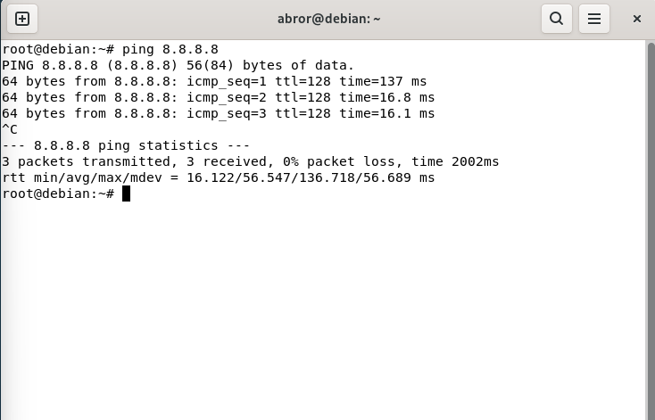
2. Update dan Upgrade Sistem
Perbarui daftar paket dan sistem terlebih dahulu agar proses instalasi berjalan lancar:
#apt update
#apt upgrade
Tunggu proses berjalan sampai selesai dan pastikan tidak ada tulisan error, contohnya seperti berikut:
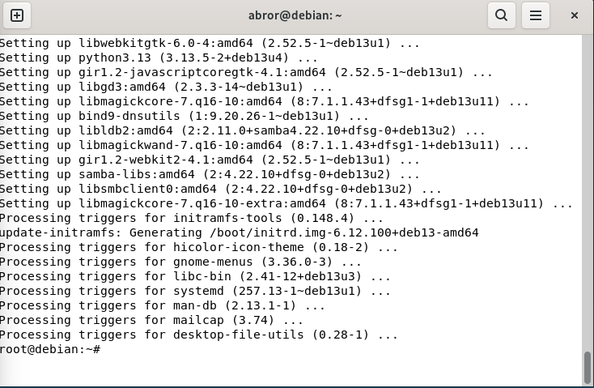
3. Install Paket DHCP Server
Install paket isc-dhcp-server dengan perintah berikut:
#apt install isc-dhcp-server
Jika muncul pilihan konfirmasi (Y/n), ketik Y lalu tekan Enter untuk melanjutkan.
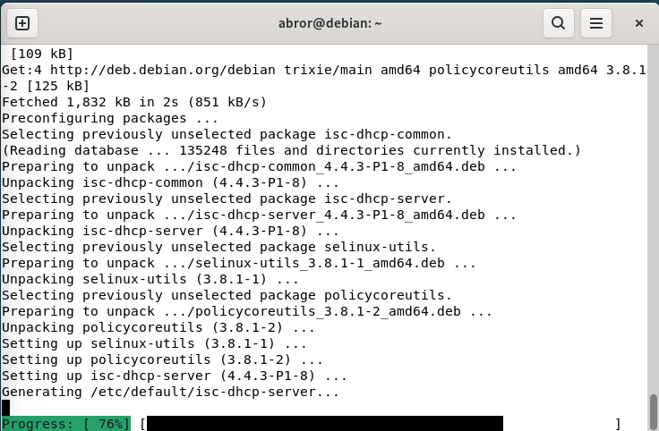
Jangan panik jika muncul tulisan merah / error setelah instalasi selesai
Tampilan seperti gambar di bawah ini adalah hal yang wajar terjadi. Begitu paket isc-dhcp-server selesai diinstall, sistem otomatis mencoba menjalankan service-nya. Namun karena file konfigurasi dhcpd.conf masih kosong (belum ada subnet dan interface yang ditentukan), service DHCP gagal berjalan (failed) untuk sementara. Ini bukan tanda kegagalan instalasi, jadi bisa diabaikan dulu, karena akan kita perbaiki pada langkah konfigurasi selanjutnya.
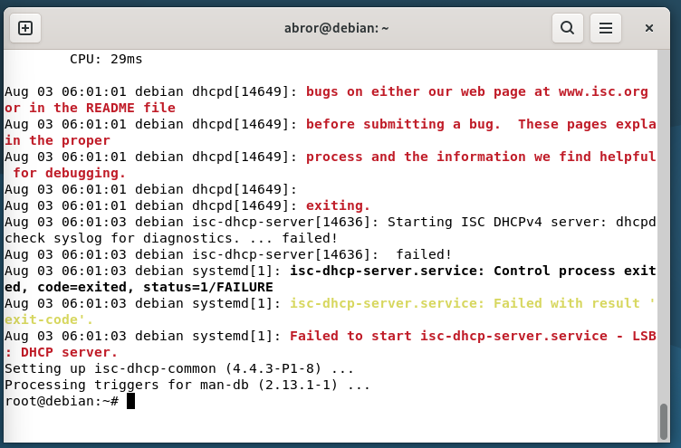
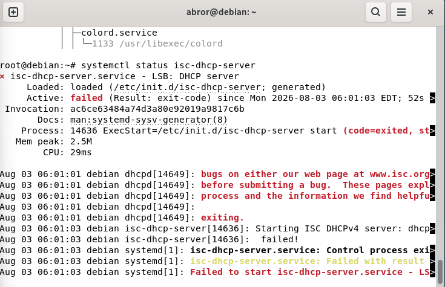
4. Tentukan Interface yang Digunakan untuk DHCP Server
Buka file konfigurasi default isc-dhcp-server untuk menentukan interface mana yang akan digunakan untuk membagikan IP:
#nano /etc/default/isc-dhcp-server
Cari baris INTERFACESv4 dan isi dengan nama interface jaringan lokal yang digunakan, dalam contoh ini ens37:
INTERFACESv4="ens37"
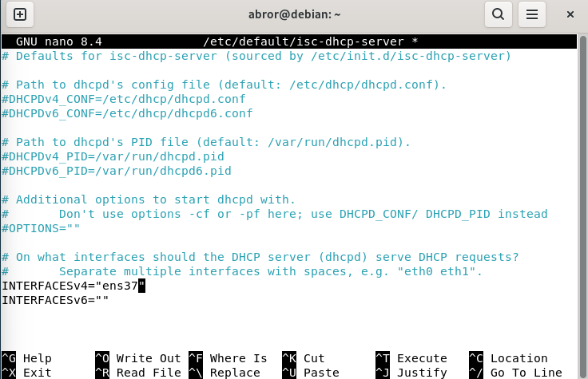
Simpan dengan Ctrl+O lalu Enter, kemudian keluar dengan Ctrl+X.
5. Konfigurasi File dhcpd.conf
Selanjutnya buka file konfigurasi utama DHCP Server:
#nano /etc/dhcp/dhcpd.conf
Cari bagian yang bertuliskan "A slightly different configuration for an internal subnet" seperti gambar di bawah ini:
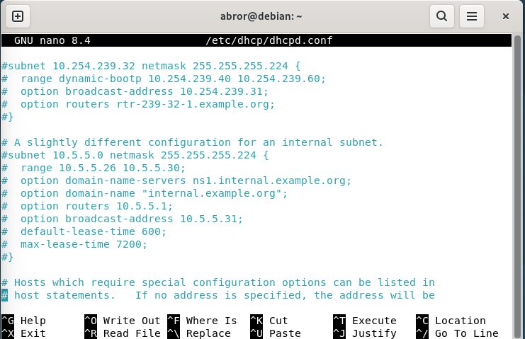
Hapus tanda pagar (#) pada baris subnet sampai tanda kurung tutup di bawahnya, lalu sesuaikan isinya dengan jaringan yang digunakan. Contoh konfigurasi (sesuaikan dengan IP network kalian masing-masing):
subnet 192.168.27.0 netmask 255.255.255.0 {
range 192.168.27.10 192.168.27.15;
option domain-name-servers ns1.internal.example.org;
option domain-name "internal.example.org";
option routers 192.168.27.1;
option broadcast-address 192.168.27.255;
default-lease-time 600;
max-lease-time 7200;
}
Penjelasan singkat tiap bagian:
• subnet dan netmask — alamat jaringan (network ID) dan netmask sesuai IP interface ens37 (192.168.27.1/24), sehingga subnet-nya 192.168.27.0.
• range — batas awal dan akhir alamat IP yang akan dibagikan ke client, perhatikan tanda titik koma (;) di akhir baris.
• option routers — alamat gateway yang akan diberikan ke client, biasanya sama dengan IP server (192.168.27.1).
• option broadcast-address — alamat broadcast dari network tersebut.
• default-lease-time / max-lease-time — lama waktu (detik) client boleh menggunakan IP sebelum harus diperbarui.
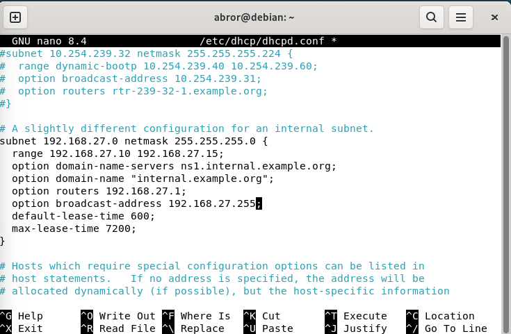
Setelah dipastikan tidak ada yang salah, simpan dengan Ctrl+O lalu Enter, kemudian keluar dengan Ctrl+X.
6. Restart dan Cek Status DHCP Server
Terapkan konfigurasi yang baru dibuat dengan merestart service DHCP:
#systemctl restart isc-dhcp-server
setelah restart tidak ada output apa-apa (kosong) berarti berhasil.
Lalu cek statusnya untuk memastikan service sudah berjalan (active/running):
#systemctl status isc-dhcp-server
Jika berhasil, statusnya akan berubah menjadi active (running) berwarna hijau seperti berikut.
Jika masih gagal, periksa kembali konfigurasi pada langkah 4 dan 5.
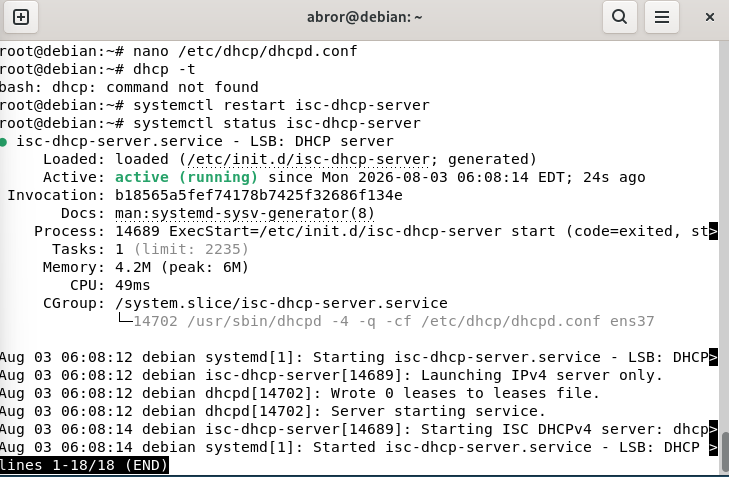
7. Uji Coba dari Sisi Client
Langkah terakhir adalah menguji apakah client bisa mendapatkan IP secara otomatis dari DHCP Server.
a. Buka Control Panel pada komputer/laptop client, lalu masuk ke Network and Internet > Network and Sharing Center.
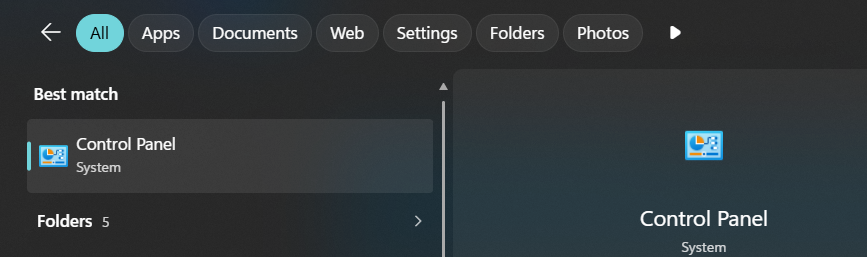
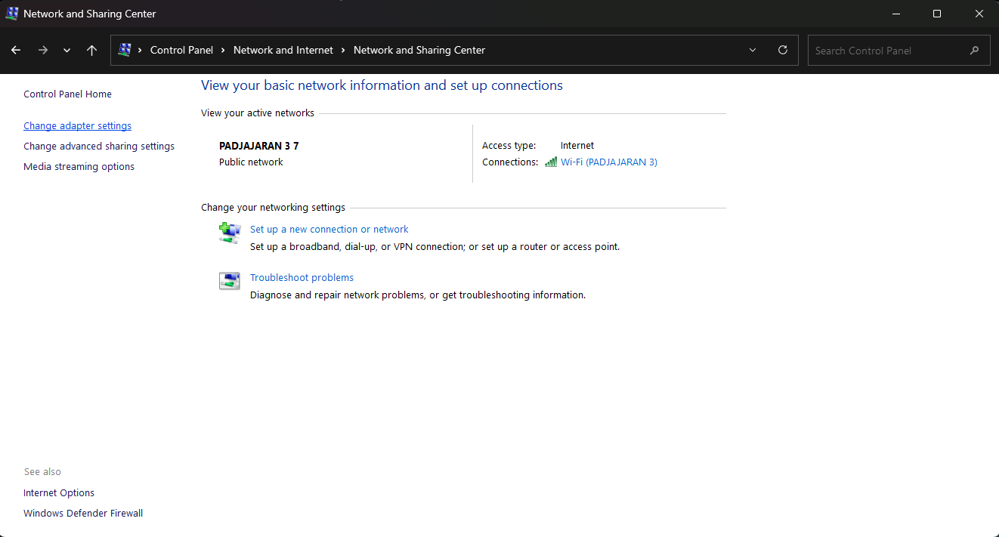
b. Klik Change adapter settings, lalu cari adapter VMware Network Adapter VMnet1 (Host-only) yang sudah diatur pada jobsheet network sebelumnya.
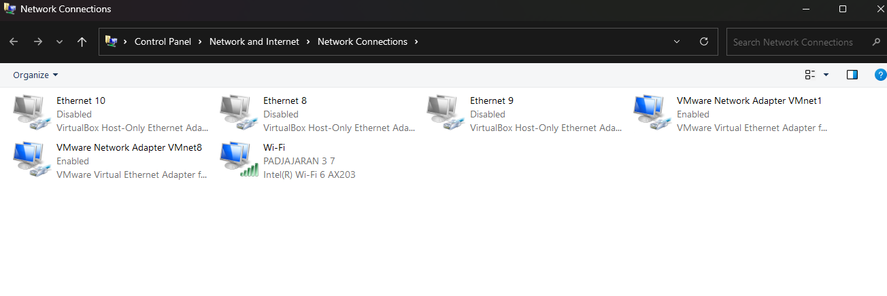
c. Klik kanan pada adapter tersebut, pilih Disable, lalu klik kanan lagi dan pilih Enable. Langkah ini membuat client meminta ulang alamat IP baru ke DHCP Server.
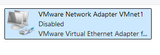
d. Klik kanan pada adapter, pilih Status, lalu klik Details untuk melihat apakah client sudah mendapatkan alamat IP dari DHCP Server (perhatikan IPv4 Address dan IPv4 DHCP Server).
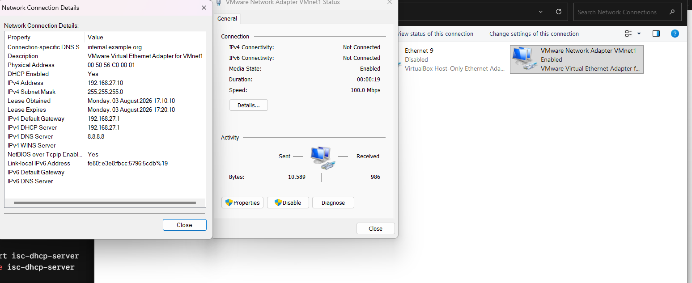
e. Jika sudah mendapatkan IP, uji koneksi melalui Command Prompt dengan melakukan ping ke alamat IP yang diterima, dan ping ke 8.8.8.8 untuk memastikan client juga bisa mengakses internet.
ping [IP yang didapat client]
ping 8.8.8.8
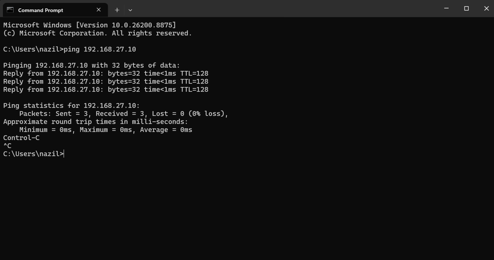
Jika client berhasil mendapatkan IP secara otomatis dan ping berjalan lancar, artinya DHCP Server sudah berfungsi dengan baik.